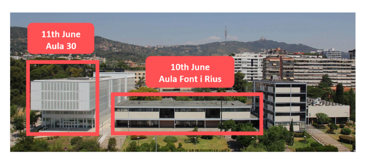

Seminari internacional
SEMINARI INTERNACIONAL
TRANSFORMACIONS URBANES, CANVI DEMOGRÀFIC I DESIGUALTATS EDUCATIVES ESPACIALS A LES CIUTATS GLOBALS
Barcelona
10 - 11 de juny de 2025
Justificació
La transformació urbana i la reconfiguració socioespacial són forces clau que modelen les societats contemporànies. La globalització ha aprofundit la fragmentació i la polarització social, impulsant desigualtats i transformant els paisatges urbans. Des de mitjan anys setanta, l’augment de la desigualtat social i l’afebliment de la capacitat dels governs nacionals i locals per contrarestar-la han intensificat la segregació residencial i les desigualtats econòmiques. La naturalesa de la segregació i d’altres desigualtats espacials varia entre ciutats globals, condicionada per les històries urbanes, la reestructuració econòmica, els canvis en l’estat del benestar i les polítiques d’habitatge.
En els darrers anys, aquestes tendències s’han accelerat arran de canvis demogràfics significatius. Els fluxos migratoris i les polítiques urbanes han alterat la composició social dels barris i de les escoles, mentre que la turistificació i la gentrificació han transformat els paisatges urbans i han influït en les desigualtats educatives. Al mateix temps, les polítiques urbanes i educatives han adoptat cada vegada més enfocaments neoliberals, visibles en la liberalització del mercat de l’habitatge i en l’expansió de les polítiques d’elecció escolar.
La interacció entre les transformacions urbanes i les polítiques educatives és central per entendre la configuració de les desigualtats socioespacials en educació. La reestructuració espacial influeix en les jerarquies escolars, reconfigura els mercats educatius locals i reforça els vincles entre segregació residencial i segregació escolar. Aquestes dinàmiques s’entrecreuen amb les polítiques d’admissió escolar, la diversificació de l’oferta educativa i la redefinició de les zones escolars, sovint amb efectes incerts sobre les desigualtats socioespacials. Les interaccions complexes entre els mercats d’habitatge, les polítiques educatives i les estratègies familiars generen noves formes de desigualtat educativa que continuen sent insuficientment explorades. Aquest seminari reuneix investigadors i investigadores de diversos contextos urbans i disciplines per examinar com el canvi urbà, les desigualtats espacials i les polítiques educatives s’entrecreuen en la configuració de les desigualtats educatives. Els temes principals inclouen:
L’impacte de les transformacions urbanes, les migracions i els canvis demogràfics en la segregació escolar.
El paper de les polítiques d’elecció escolar, les regulacions i processos d’admissió, i les estratègies parentals en la configuració de les desigualtats educatives.
Els patrons d’elecció escolar i de mobilitat de l’alumnat en entorns urbans.
Les interseccions entre polítiques d’habitatge, renovació urbana i accés educatiu.
Els efectes de la gentrificació en la composició escolar i els resultats educatius. Respostes polítiques i intervencions per reduir la segregació escolar i promoure l’equitat.
Coordinat per
Xavier Bonal (UAB), Sheila González (UB), Adrián Zancajo (UAB)
Programa
10 de juny — Aula Font i Rius (edifici històric)
09:00 Benvinguda i introducció
09:30 Sessió 1. Canvi urbà i demogràfic a la ciutat global
Presideix: Xavier Bonal
Canvi de barris i transformacions poblacionals a les ciutats del sud d’Europa: processos i tendències clau
Antonio López GayLes mutacions de la segregació residencial: més enllà de la gentrificació
Daniel SorandoEspecialització residencial i desigualtat entre municipis: tendències a la regió metropolitana de Barcelona
Ismael Blanco
11:00 Pausa cafè
11:30 Sessió 2. Nous patrons de segregació escolar en entorns urbans
Presideix: Isabel Ramos Lobato
Segregació interseccional: conceptualització i aplicació al cas de l’escolarització al Brasil
Rob J. GruijtersTransicions educatives situades: com la composició de l’escola local afecta les trajectòries educatives
Costanzo Ranci & Francisco Gabriel FerraioliConfiguració de la segregació escolar i de classe: el paper de les pràctiques institucionals i quotidianes dels centres
Marta Cordini, Carlotta Casiagli, Giulia Marroccoli & Berenice Scandone
13:00 Dinar
14:30 Sessió 3. Elecció escolar en entorns urbans canviants
Presideix: Quentin Ramond
Elecció escolar i accés a escoles efectives
Ellen GreavesLes famílies gentrificadores fugen de les escoles locals? Un estudi de cas de Barcelona
Xavier Bonal & Sheila GonzálezElecció escolar i desigualtats espacials: un experiment d’enquesta sobre les preferències parentals per escoles de primària en diferents barris
Håkan Forsberg & Andreas Alm Fjellborg
16:00 Pausa cafè
16:30 Sessió 4. Respostes dels actors a les transformacions urbanes i demogràfiques
Presideix: Sheila González
Participació de persones immigrades en barris de nova arribada: les escoles com a espais de trobada?
Isabel Ramos LobatoSegregació del professorat en el marc de la provisió del mercat laboral, la segregació escolar i la segregació residencial
Sonja KosunenExperiències emocionals i estigma entre beneficiaris de les polítiques de desegregació de Barcelona
Andrea Jover, Martí Manzano, Berta Llos & Andreu Termes
11 de juny — Aula 30 (edifici nou)
09:30 Sessió 5. Efectes de barri i segregació escolar
Presideix: Adrián Zancajo
El paper dels barris de l’entorn de les escoles en l’elecció escolar i la segregació escolar
Quentin RamondReputació del barri, elecció escolar i segregació escolar
Eduardo TapiaGentrificació i canvi escolar: explorant els dilemes de la diversitat en l’espai educatiu local
Marcel Pagès, Pablo Neut & Nur Garcia-Borés
11:00 Pausa cafè
11:30 Sessió 6. Polítiques educatives per abordar la segregació escolar
Presideix: Marta Cordini
La zonificació escolar ajuda a reduir la segregació escolar? Lliçons de França
Marco Oberti & Lise LécuyerImpactes i efectes de les polítiques de desegregació a Barcelona
Adrián Zancajo, Sheila González & Edgar QuilabertQuan regular la selectivitat escolar no és suficient: límits del sistema centralitzat d’admissió escolar xilè per reduir la desigualtat
Alejandro Carrasco
Lloc
Facultat de Dret (Universitat de Barcelona) Avinguda Diagonal 684, 08034 Barcelona

Aules del seminari
10 de juny: l’Aula Font i Rius es troba a la primera planta de l’edifici principal (edifici històric) de la Facultat de Dret.
11 de juny: l’Aula 30 es troba a la planta baixa de l’edifici nou.
Llista de participants
| Nom | Institució |
|---|---|
| Ismael Blanco | IGOP-UAB |
| Xavier Bonal | GEPS-UAB |
| Alejandro Carrasco | Universidad Católica de Chile |
| Marta Cordini | Politecnico di Milano |
| Sheila González Motos | Universitat de Barcelona |
| Ellen Greaves | University of Exeter |
| Rob J. Gruijters | University of Bristol |
| Francisco Ferraioli | Politecnico di Milano |
| Andreas Alm Fjellborg | Uppsala University |
| Håkan Forsberg | Uppsala University |
| Nur Garcia-Borés | GEPS-UAB |
| Andrea Jover | GEPS-UAB |
| Sonja Kosunen | University of Eastern Finland |
| Lise Lécuyer | Sciences Po |
| Antonio López-Gay | CED-UAB |
| Berta Llos | GEPS-UAB |
| Martí Manzano | GEPS-UAB |
| Giulia Marroccoli | Politecnico di Milano |
| Pablo Neut | GEPS-UAB |
| Marco Oberti | Science Po |
| Marcel Pagès | Universitat de Barcelona |
| Edgar Quilabert | GEPS-UAB |
| Quentin Ramond | Mayor University, Chile |
| Isabel Ramos Lobato | ILS-Dortmund |
| Costanzo Ranci | Politecnico di Milano |
| Berenice Scandone | Politecnico di Milano |
| Daniel Sorando | Universidad de Zaragoza |
| Eduardo Tapia | Institute of Analytical Sociology |
| Andreu Termes | GEPS-UAB |
| Adrián Zancajo | GEPS-UAB |
Aquest seminari està organitzat pel Grup Interdisciplinari de Polítiques Educatives (GIPE), amb el suport de la Generalitat de Catalunya (SGR-Cat 2021, Ref. 00943), i forma part del projecte The Effects of Gentrification on Educational Inequalities (GENTRED), finançat pel Ministeri de Ciència i Tecnologia d’Espanya (PID2022-137183NB-I00).